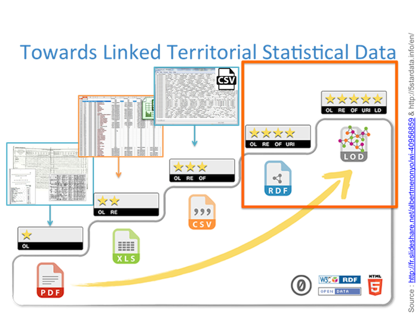
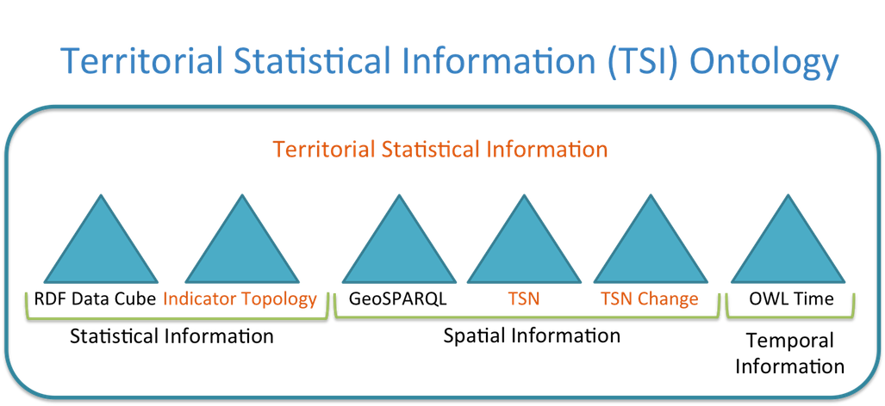

Linked_Territories Project
The Linked_Territories project aims at describing the evolution of territories through socio-economics data published within the Web of Linked Data cloud.
To achieve this goal, several ontologies are created (in orange within the figure bellow): TSN, TSN-Change and TSI.
The TSI-Ontology combines several ontologies (RDF-Data-Cube, QB4ST, TSN, TSN-Change) then allow you to publish socio-economic indicator within the Linked Open Data Cloud, even if those indicators rely on different territorial divisions or terriorial division versions.
PARTNERS INVOLVED
Partners involved in the Linked Territories Project:
STeamer - LIG
STeamer team - Laboratoire d'Informatique de Grenoble (LIG)
Web site: http://steamer.imag.fr
REGION AUVERGNE-RHÔNE-ALPES - ARC7
The French Region Auvergne-Rhône-Alpes - ARC7 http://www.arc7-territoires-mobilites.rhonealpes.fr/
PROJECT MEMBERS
Marlène Villanova-Oliver - Associate Professor, Université Grenoble Alpes
Web Page
Jérôme Gensel - Professor, Université Grenoble Alpes
Web Page
Hy Dao - Professor at the Dept of geography and environment of the University of Geneva & Geographer at the United Nations Environment Programme
Web Page
Camille Bernard - PhD Student, Université Grenoble Alpes
Web Page